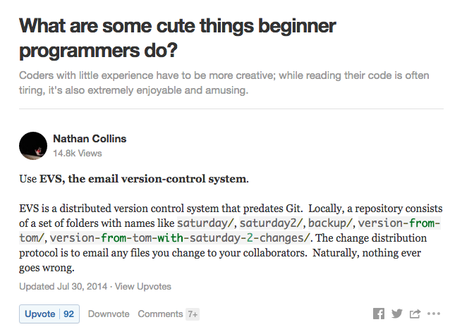

Intro to Git
A non comprehensive guide to `git`
Table of Contents
Preface
This essay is based upon a presentation I gave to the new recruits at my (former) employer CouponDunia. While preparing this presentation I went through some of the finest Git tutorials1. Though the knowledge of internal working of Git isn't essential for working with it, knowing the stuff under the hood can help to grok Git and solve some of the common problems.
Since this presentation was made for folks without any prior experience of working with version control system, it starts with the very basics. If you find it too trivial, feel free to jump to the topic advanced commands. Folks with limited or no prior knowledge of VCS may find the topics at the end a bit heavy to digest in a single read. Nevertheless, I recommend reading till the end so that when any non trivial problem arise, you know what to google for.
VCS
Video Games
The very first question to be answered is what is a version control system and
what is the need of using it. Think of writing your code or document as playing
a game. Periodically you need to save your progress, so that you can continue
your game later from the same point or in case of unexpected events, such as power
failure, you have your state saved. Typically this is done by instructing your
text editor to save in a file by pressing cntrl + s2.
But saving a file this way is like saving the game in just one slot. Since the new save overwrites the previous one, there is no way of going back to previous version. So, if you reach an un-winnable state or changed the code in a way which crashes the system, there is no way of going back to the previous sane state.
Save As
Using save as, we can have multiple copies of our work which is similar to saving the game progress in multiple slots. Even better we can organize these multiple versions in folders tagged by timestamps. This gives us an ability to checkout code at a specific date and time. Problem, however, is when the number of files to be managed is large. Even for a small sized project, it's not uncommon to have hundreds of files.

Version control systems does this and a lot more. It stores multiple versions of multiple files, provides a convenient interface to manage different version and compresses file to save storage space. It also helps multiple developers work on same part of the code. Git is one of such Version Control Systems.
Distributed VCS
When you clone a git repository, you have an exact copy of the original repository. There is no central or canonical repository. When you want to work on a file, there is no need of checking it out or putting a lock on it. The way DVCS works it, you clone the repository, edit the file and then merge with other's repository. Due to this nature most of the commands3 in git can be executed offline.
Git
Linus, Linux and Git
Git was created out of need to manage Linux kernel project by Linus Torvalds4. It was designed keeping in mind the complexities of the Linux project (large number of contributers). Some of the goals of the system are:
- Speed
- Simple Design
- Support for non-linear development (thousands of parallel branches)
- Fully Distributed
- Able to handle large projects like the Linux efficiently
Basics
Snapshots, not Differences
Some version control systems store the delta or the difference between different versions. So suppose the original content was:
#include <stdio.h> #include <sys.h> #include <time.h> ...
And you added a line to include
math.h, the modified content would be:#include <stdio.h> #include <sys.h> #include <math.h> <-- line inserted #include <time.h> ...
To save space, the VCS will calculate the lines modified and store only the difference.
2a3 > #include <math.h> <-- line inserted
Modified content can be constructed using Original Content and the delta.
Git doesn't do this. It stores whole file at each version as a snapshot of that file at that time.
Nearly everything is local
There is no need of network access to edit or commit. Network access is required only to synchronize repositories over the network.
Git has integrity
Everything is hashed before storing in repository. These hashes are used to refer the snapshots. Thus, data can't get corrupt without git knowing it.
- No central authority or canonical repository
The three states
Everything that is tracked using git is in one of these 3 states:
- Modified: You have changed the file but have not yet committed the modified file.
- Committed: The files which are committed are safely stored in local database.
- Staged: You have marked a modified file to go to next commit.
And corresponding to these states, there are 3 areas where these files will be stored:
- Working Directory: This is where you edit your content. And this is the only state where you can manipulate files directly.
- Repository: (
.gitdirectory) This is where versions of each file and metadata are stored. Git manages this state and there will be almost never a reason for you to fiddle with it directly. - Staging Area: It's just a file (
.git/index) which stores information about what will go into the next commit.